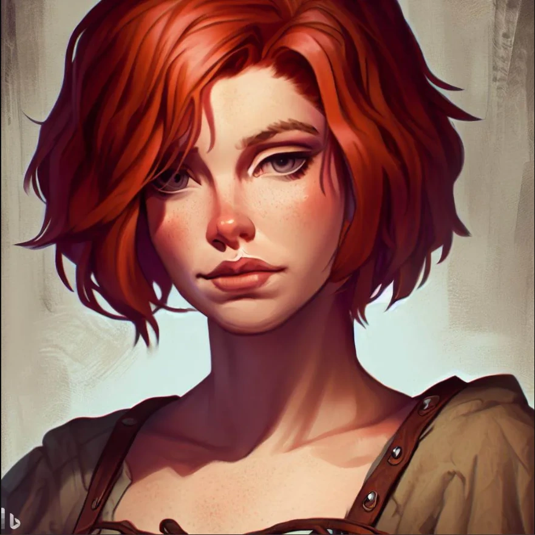
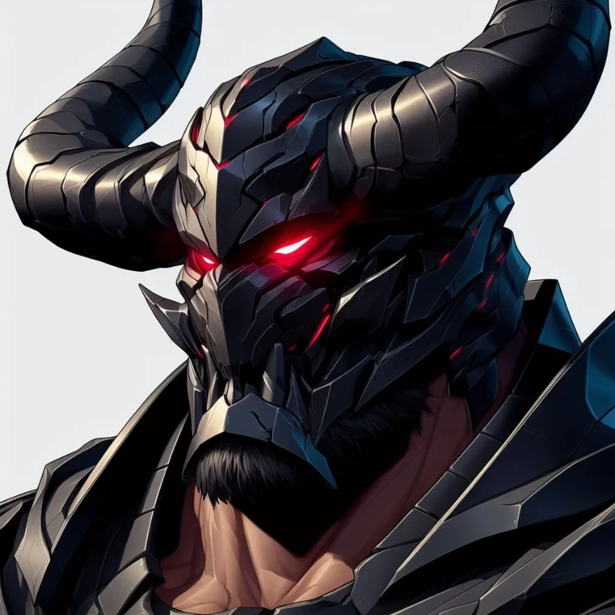
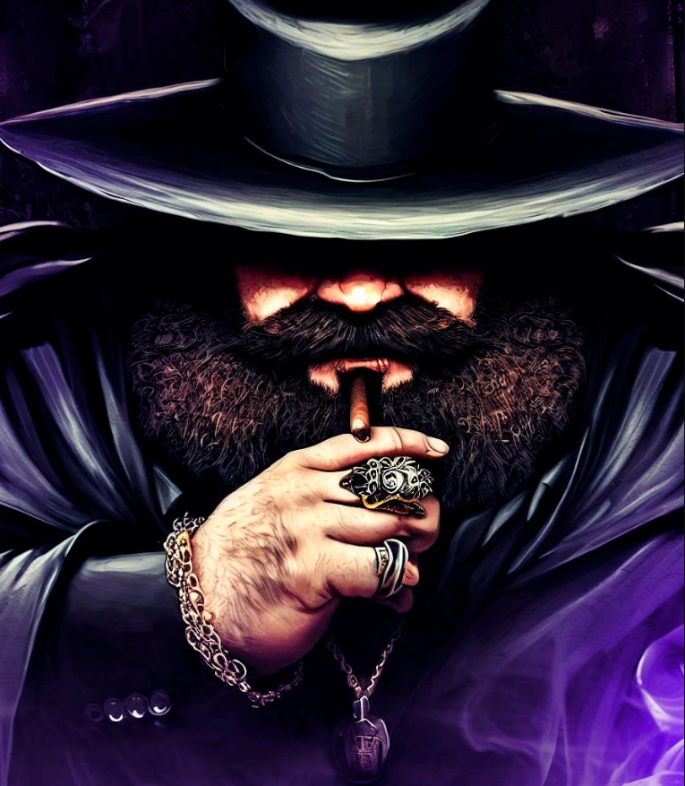
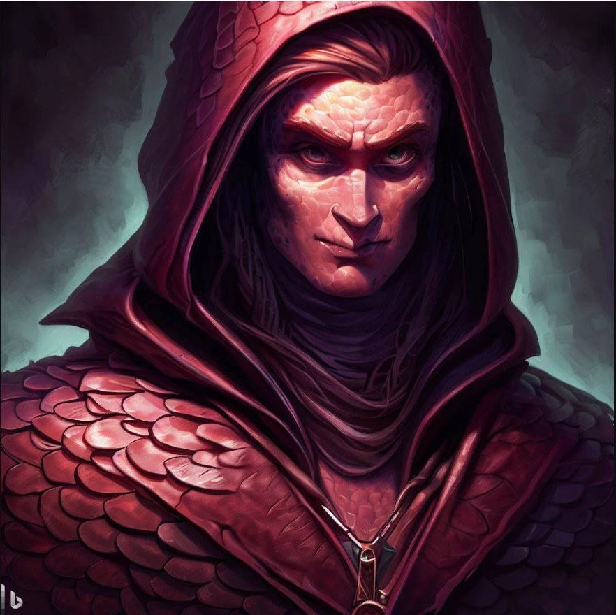
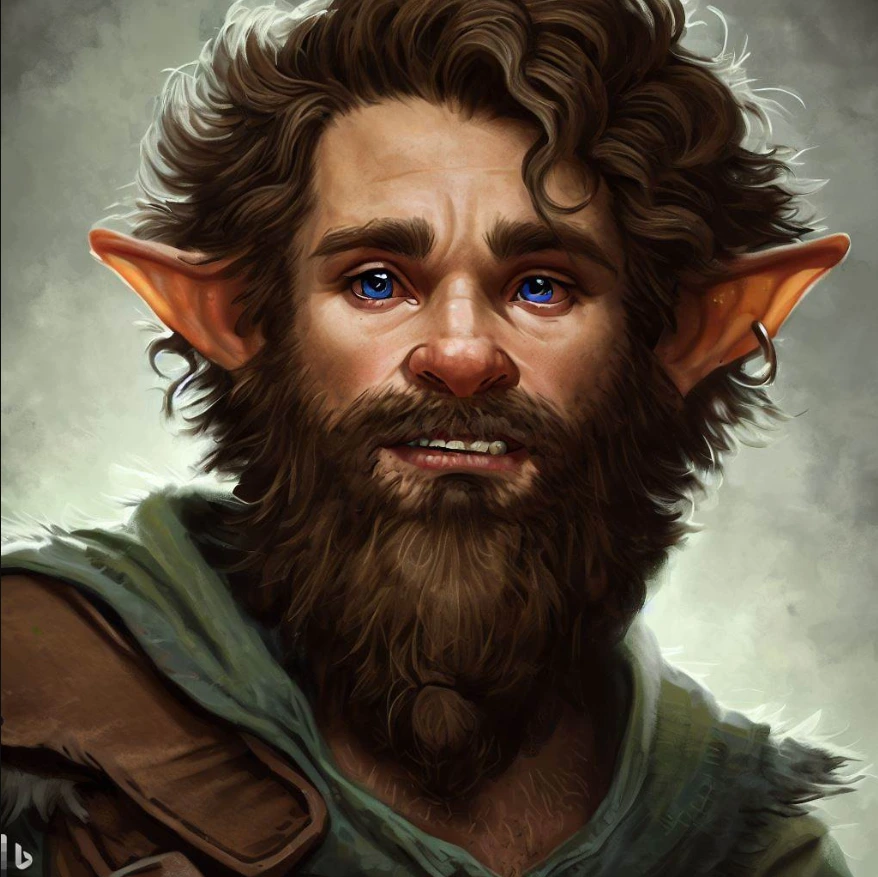
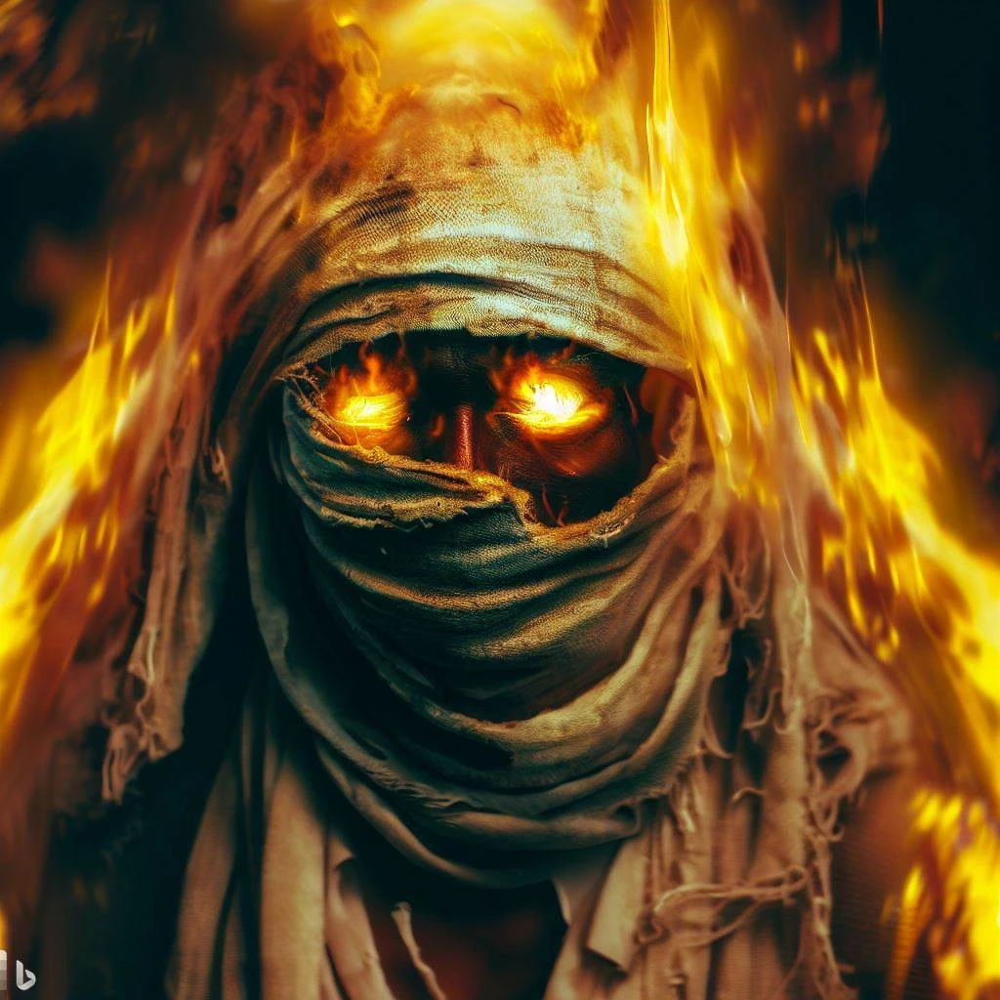

El Astra es el sistema principal de magia usado en este sistema. Solo alrededor del 2% de la población posee un núcleo astral, necesario para utilizar el Astra. Mediante su manipulación, se pueden crear cadenas astrales que son lo que acaba manifestando el poder o efecto deseado. Dicho de otro modo, se pasa de energía a materia. Solo los usuarios de astra son capaces de ver estas cadenas.
El Astra permite una gran libertad a la hora de atacar o crear efectos, ya que el jugador no está limitado a hechizos fijos como en otros sistemas. Dentro del Astra, tenemos 9 sendas principales y una que todavía no está del todo en uso debido a misterios en la historia principal.
| Nombre | Descripción | Ejemplos de uso | Usuarios notables |
|---|---|---|---|
| Bio | Senda de la vida y la naturaleza | Realizar curaciones o crear enfermedades |
 |
| Lapis | Senda de la tierra y los metales | Causar terremotos y moldear metales |
 |
| Magna | Senda de los campos electromagnéticos | Lanzar rayos y manipular la gravedad |
 |
| Pyros | Senda de la temperatura | Crear fuego o hielo y manipular la temperatura |
 |
| Aurea | Senda de la luz | Reducir los niveles de luz y hacer cosas transparentes |
|
| Fluvio | Senda de los líquidos | Hacer estructuras de agua y controlar sangre |
|
| Inertia | Senda del movimiento | Acelerar objetos y crear barreras |
 |
| Aero | Senda del viento | Crear corrientes de viento y volar |
|
| Spectra | Senda de la mente | Inducir emociones y crear ilusiones |
 |
| Memento | Senda del tiempo y el espacio | Curar heridas rebobinando y teletransportarse | No |